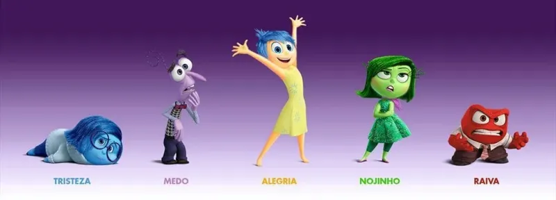
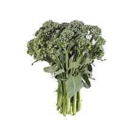
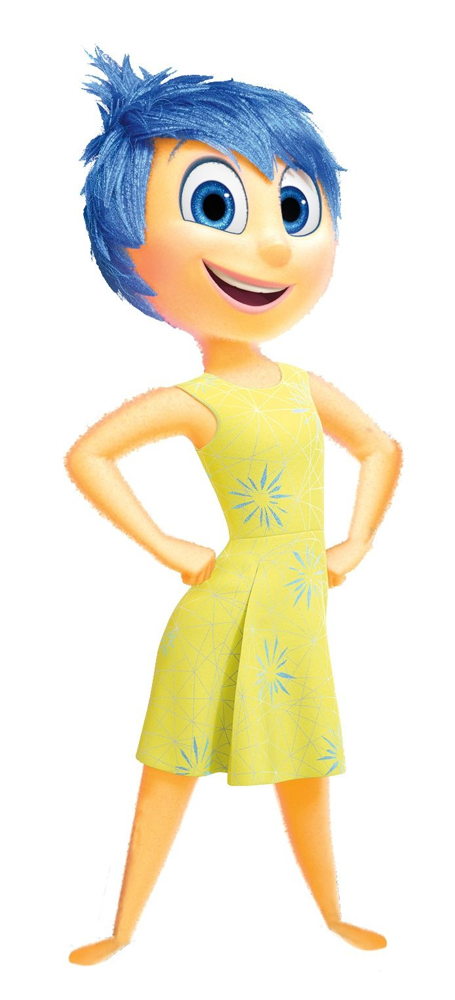
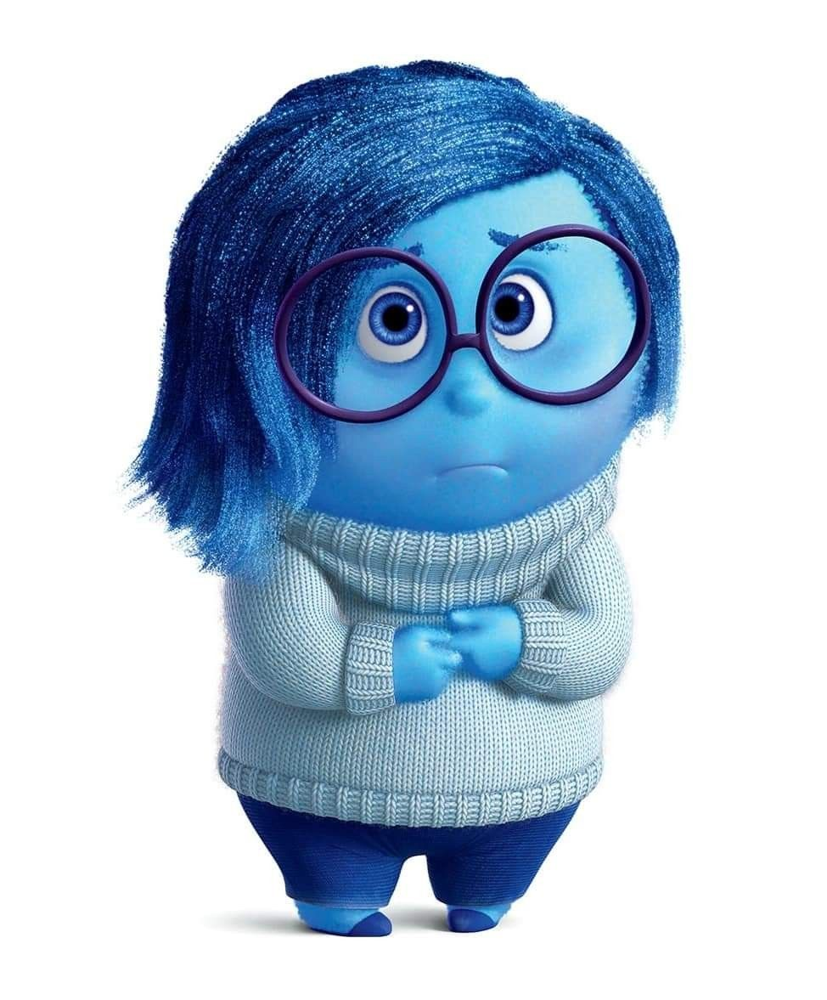
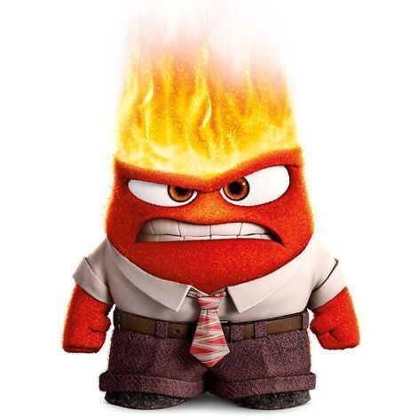
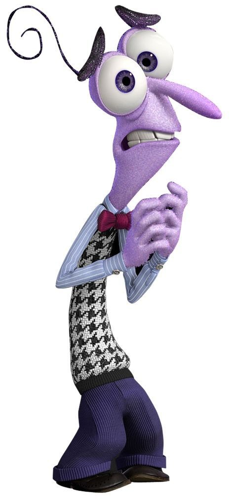
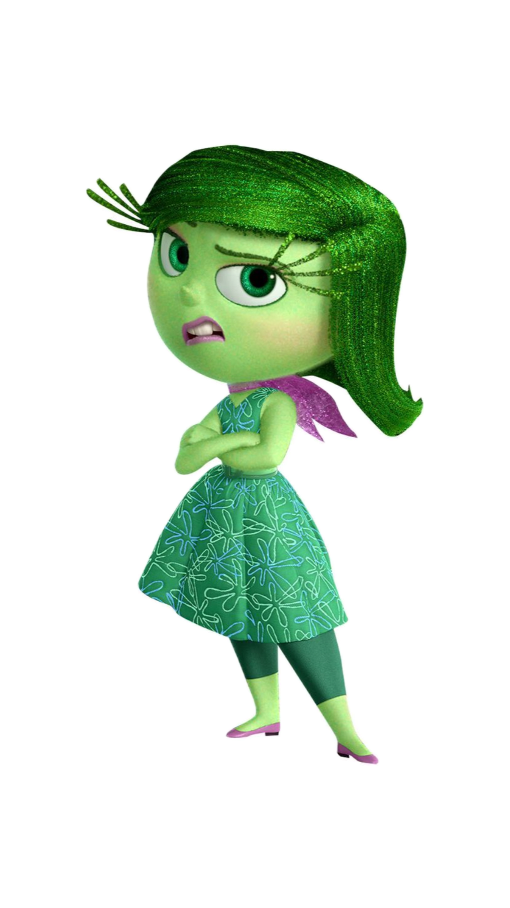
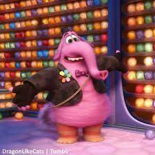
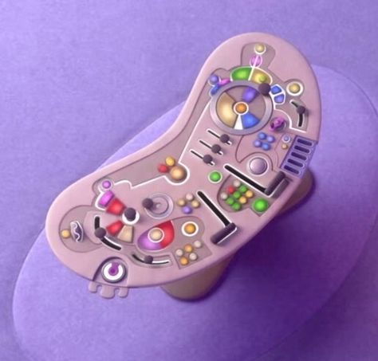

🎬 Curiosidades sobre o filme Divertidamente (Inside Out)

-
Emoções diferentes em outros países
- No Japão (⛩️), o brócolis (🥦) foi substituído por pimentão verde (🫑)...
- A adaptação foi feita para manter a coerência cultural da cena de "Nojinho".


-
O nome original seria diferente
- Inicialmente, o filme teria o nome provisório de “The Inside Story” (A História de Dentro).
-
A memória favorita muda de cor
- No início do filme, a memória central da Riley era totalmente amarela (Alegria).
- No final, ela ganha tons de azul (Tristeza)...
-
Dublagens personalizadas
- As vozes e piadas foram adaptadas para cada país...
- Algumas expressões foram localizadas para que as crianças de cada cultura entendessem melhor.
-
As emoções têm formas simbólicas
- 💛 Alegria – inspirada em uma estrela

- 💙 Tristeza – lembra uma gota

- ❤️ Raiva – parece um tijolo/quadrado

- 💜 Medo – fino e nervoso

- 💚 Nojinho – brócolis estilizado

-
Inicialmente teria 27 emoções
- Durante o desenvolvimento, a Pixar chegou a listar 27 emoções diferentes...
-
A idade de Riley foi escolhida a dedo
- Ela tem 11 anos, pois essa é uma fase de grandes mudanças emocionais...
-
Oscar e reconhecimento
- O filme venceu o Oscar de Melhor Animação em 2016.
- Também foi indicado a Melhor Roteiro Original...
-
Consultoria científica real
- Psicólogos como Paul Ekman e Dacher Keltner ajudaram na construção das emoções...
-
Bing Bong quase foi cortado

- O amigo imaginário Bing Bong quase foi deixado de fora do roteiro.
- Porém, sua cena de despedida emocionou tanto os roteiristas que decidiram mantê-lo.
-
A mente como uma cabine de avião

- A sala de controle das emoções foi inspirada em painéis de aviões e naves...
-
As 27 emoções inicialmente cogitadas
- Segundo fontes ligadas à produção, algumas das emoções que estavam na lista original incluem:
- Alegria, Tristeza, Raiva, Medo, Nojinho, Surpresa, Orgulho, Confiança, Ansiedade, Nostalgia, Inveja, Tédio, Romance, Encantamento, Empatia, Interesse, Triunfo, Admiração, Adoração, Satisfação, Calma, Horror, Temor, Excitação, Desejo, Estranhamento, Diversão, Dúvida, Simpatia, Apreço visual
- Essas emoções foram consideradas para representar a complexidade emocional humana...
Por que reduzir para cinco?
- Simplicidade visual e narrativa
- Facilidade de identificação para o público infantil
- Base nas emoções universais da psicologia de Paul Ekman
- Com o crescimento de Riley em *Divertida Mente 2*, algumas dessas emoções descartadas... ganham espaço.
-
Como as emoções mudam em diferentes culturas
- O filme originalmente teria mais de 20 emoções...
- Em *Divertida Mente 2*, os adultos não apresentam as novas emoções que surgem em Riley...
- Os pais da Riley têm um conjunto emocional mais limitado...
- Emoções como o amor foram deixadas de fora ou escondidas...
- Algumas teorias imaginam pares entre emoções...
-
Curiosidade bônus: Cores das emoções
- 💛 Alegria – inspirada em uma estrela
- 💙 Tristeza – lembra uma gota
- ❤️ Raiva – parece um tijolo/quadrado
- 💜 Medo – fino e nervoso
- 💚 Nojinho – brócolis estilizado